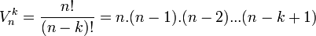

Пермутация на n елемента наричаме произволна тяхна наредба, в която всеки един от тези елементи се среща само веднъж. Броят на възможните различни наредби (пермутации) е n!=1.2.3...n
n! - функция на естествено число n, равна на произведението на естествени числа от 1 до n.
Например:
Вариациите се използват за изчисляване на броя на начините, по които могат от дадено множество от n на брой елемента да се изберат k на брой, като реда на избиране на елементите е от значение.
Комбинация на n елемента от k-ти клас, се нарича което и да е множество от k различни елемента избрани измежду n дадени елемента. Поредността на избраните елементи е без значение, така че множествата с еднакви елементи представляват една и съща комбинация.